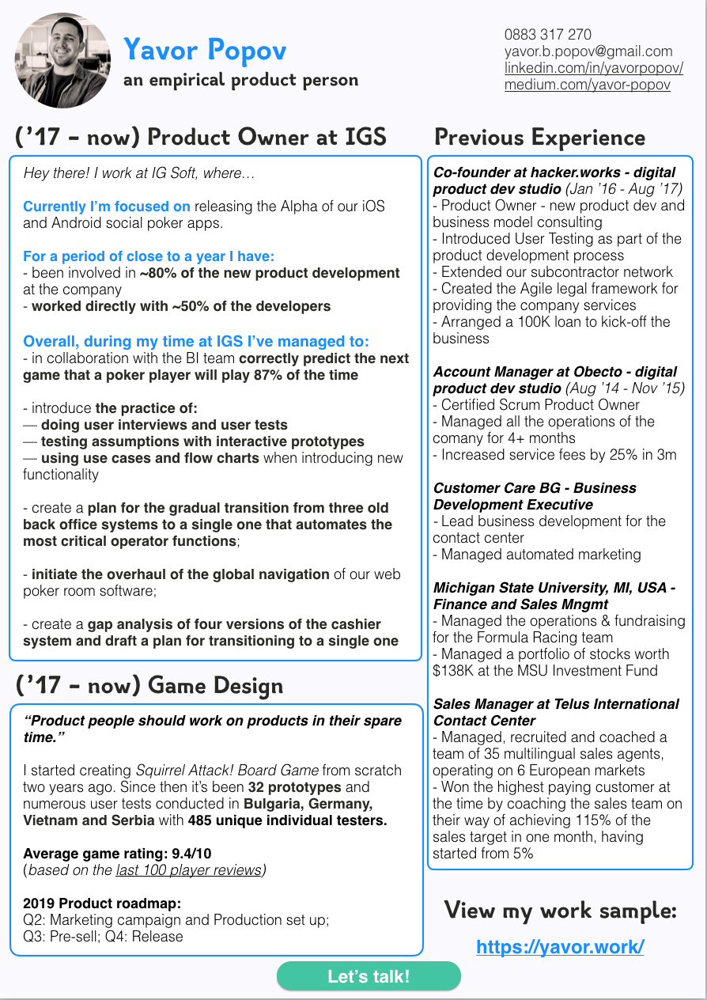
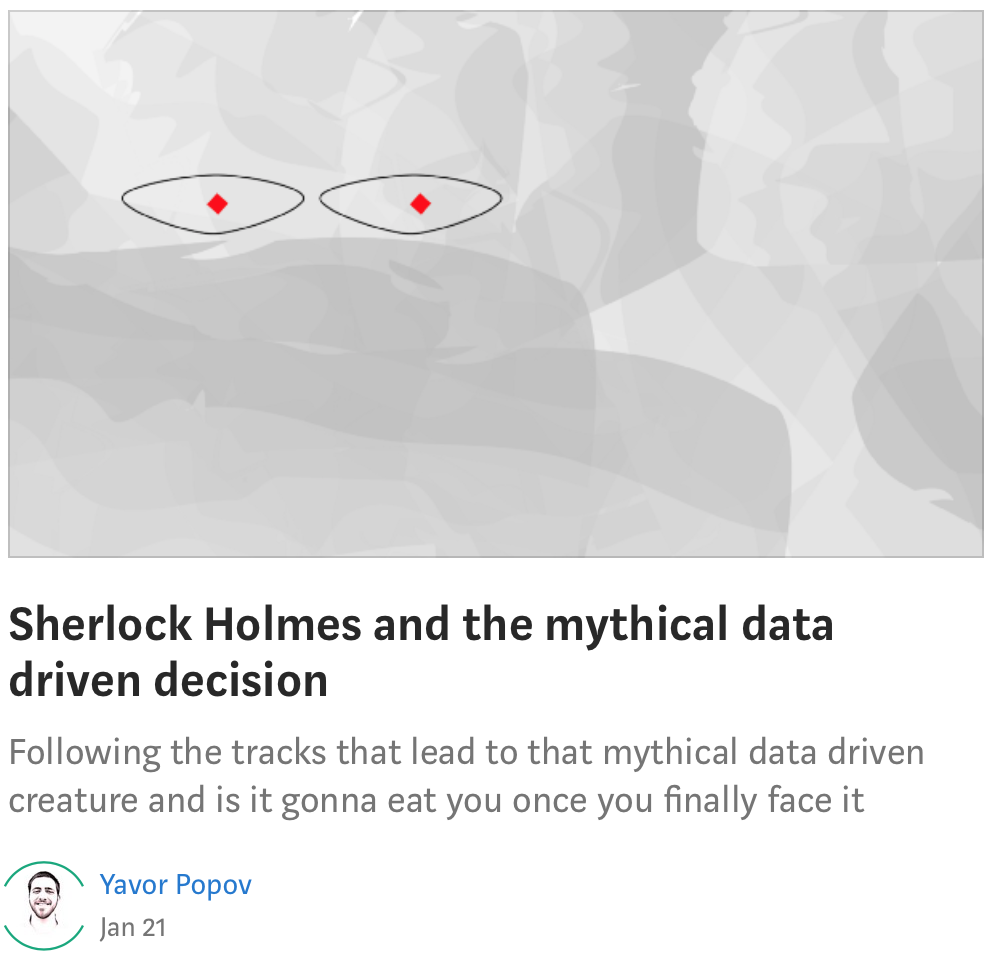

You've made it!
Remember that this site is just a conversation starter. To continue the conversation hit the reach out button. As a next step, you can also...
Download my CV as PDF
Or read my blog: The Prototype and the Human

Sherlock Holmes and the Mythical Data-Driven Decision

Lifting the curtain on my first user tests… that went so wrong